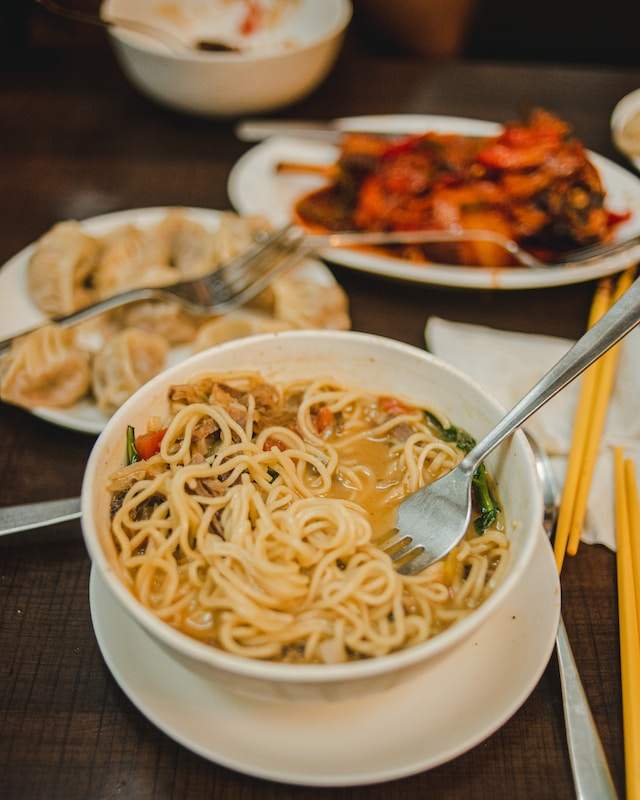

Lo Mein Noodles

Description
These lo mein noodles were created from a blend of multiple recipes. Add your favorite meat for a main dish or
serve as a side. If serving with meat, cook the meat separately.
Ingredient
- 1 (8 ounce) package spaghetti
- 3 tablespoons low-sodium soy sauce
- 2 tablespoons teriyaki sauce
- 2 tablespoons honey
- ¼ teaspoon ground ginger
- 2 tablespoons vegetable oil
- 3 stalks celery, sliced
- 2 large carrots, cut into large matchsticks
- ½ sweet onion, thinly sliced
- 2 green onions, sliced
Steps
-
Gather all ingredients.
-
Bring a large pot of lightly salted water to a boil. Cook spaghetti in boiling water, stirring occasionally,
until tender yet firm to the bite, about 12 minutes; drain, then rinse with cold water to cool.
-
Meanwhile, whisk together soy sauce, teriyaki sauce, honey, and ginger in a small bowl; set aside.
-
Heat oil in a large skillet or wok over high heat. Cook and stir celery, carrots, onion, and green onions in
hot oil until slightly tender, 5 to 7 minutes.
-
Add spaghetti and soy sauce mixture. Cook, stirring frequently, until heated through, about 5 minutes.